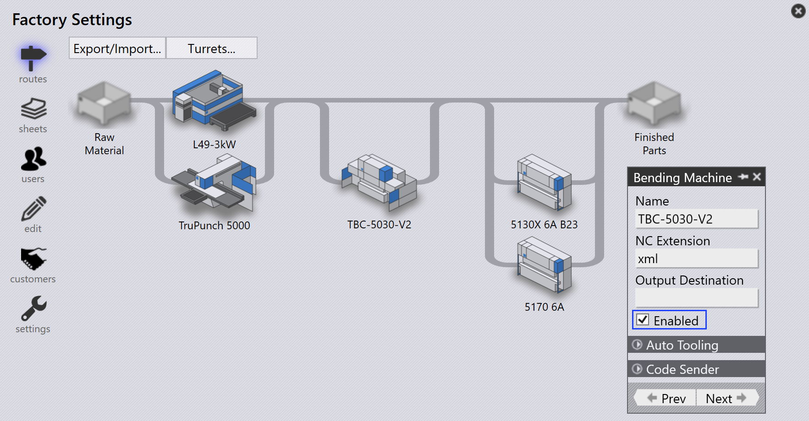
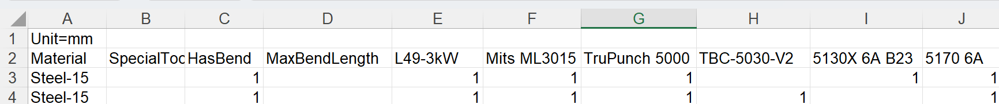
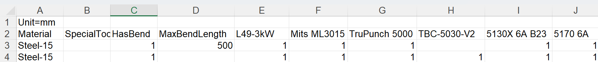
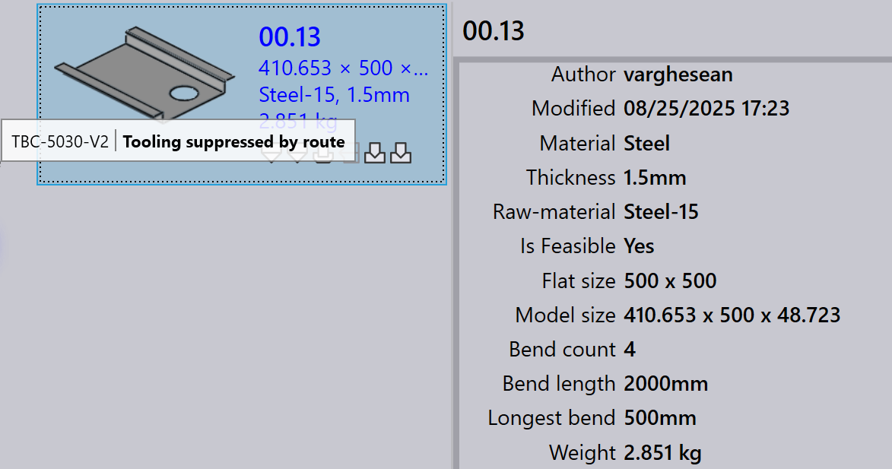

ルート
ライセンスに基づいて、JFY Plus にはデフォルトの CAM マシンとルーティング構成のセットがあります。これらの構成をカスタマイズして、特定の製造ワークフローに合わせることができます。

routes ページでは、マシンは処理ステーションとして表され、それぞれが画像と名前で識別されます。
Routes はステーションを接続し、部品が最初から最後までたどることのできる可能な workflow パスを示します。マウスでステーションにマウスを合わせると、ステーションのプロパティを表示できます。
ステーションをクリックすると、そのステーションの名前、タイプ、可用性ステータスなどの詳細情報を含むパネルが開きます。
-
ステーションの可用性を編集するには、ステーションをクリックし、パネルの Enabled チェックボックスを切り替えます。
ルーティング構成のエクスポート/インポート
Export/Import 機能を使用すると、ユーザーは現在のルーティング構成を保存し、他のプロジェクトやインスタンスに適用できます。
CAD routes のエクスポート
Export CAD routes… をクリックして、現在のすべてのルート条件ルールを CSV ファイルに保存します。

CSV には、材料とそのルーティング条件が一覧表示されます。 列は、マシン名と条件（例: Material、SpecialTool、HasBend、MaxBendLength）を表します。 値 1 はマシンへのルーティングを示し、空のセルはルーティングなしを意味します。
この CSV を変更して、システムに再インポートできます。
CAD routes のインポート
Import CAD routes… を使用して、変更した CSV ファイルを適用します。
| インポートする前に、Reset CAD routes を実行して既存の構成をクリアします。 |
システムはファイルを読み取り、ルート条件を更新します。ルールには、HasBend や MaxBendLength などの条件を含めることができます。

HasBend = 1 の場合、ルールは曲げのある部品に適用されます。
MaxBendLength =1 の場合、ルールは部品の最長の曲げ長にさらに基づいて制限されます。
Part 00.13 の最長の曲げは 500 mm です。最初のルールに一致するため、TBC-5030-V2 は除外されます。

CAD routes のリセット
Reset CAD routes を使用して、新しい CSV をインポートする前に既存のすべての構成をクリアします。
| リセットせずにインポートすると、古いルールが新しいルールと競合する可能性があります。 |